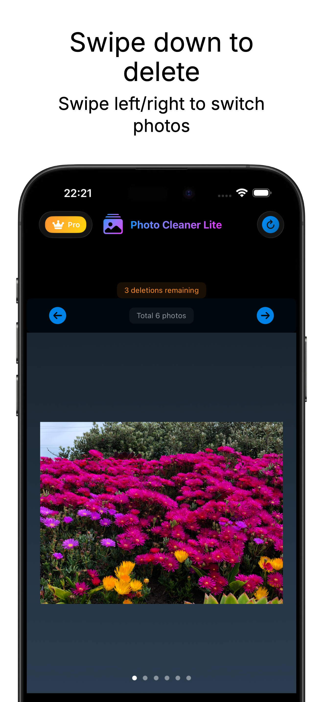
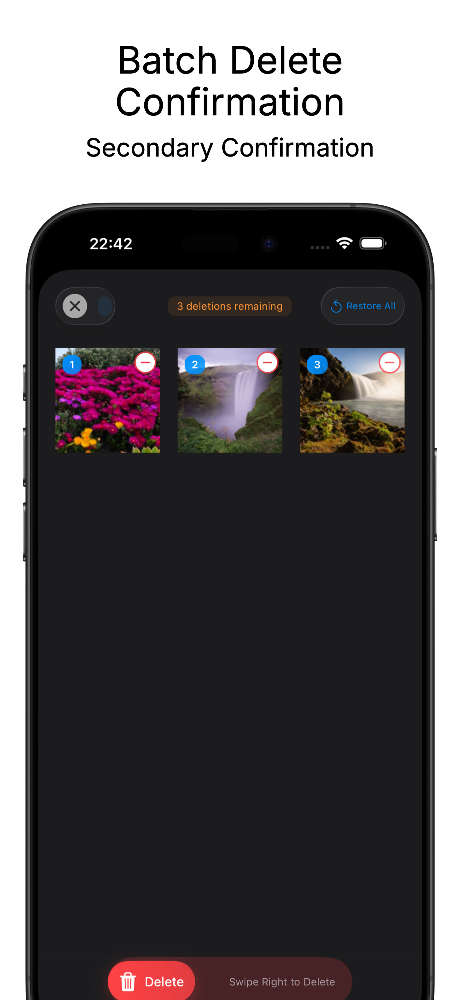
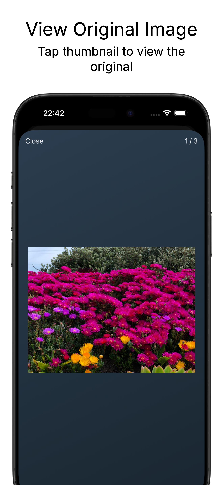
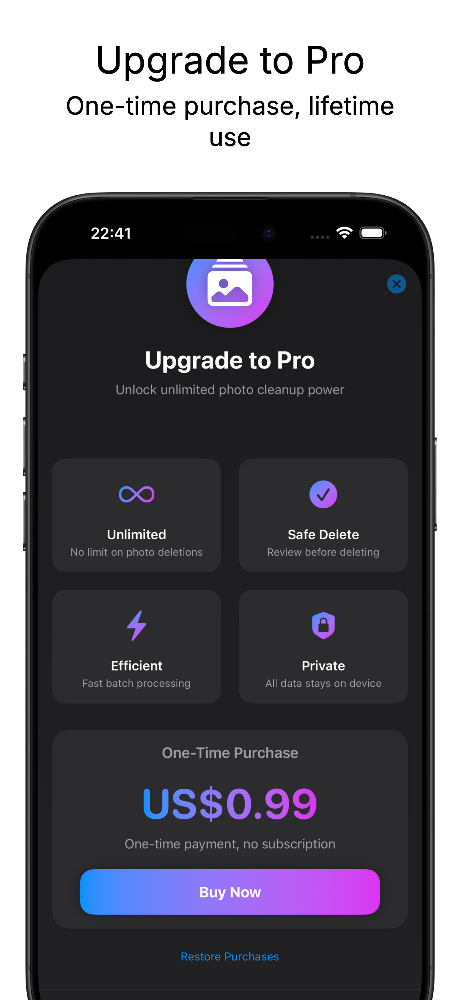

Unlimited
Upgrade to Pro to remove deletion limits and keep your library tidy whenever you need.
Photo Cleaner Lite turns photo cleanup into a fast review flow: swipe through your library, swipe down to queue unwanted photos, then confirm deletion only after review.




Designed around the gestures you already know, with a confirmation queue that keeps you in control.
Upgrade to Pro to remove deletion limits and keep your library tidy whenever you need.
Photos are added to a pending list first, so you can review everything before confirming.
Swipe left and right to browse quickly, swipe down to queue, and delete in batches.
All photo access and cleanup happens locally on your device. Your photos are not uploaded.
Allow Photo Cleaner Lite to show your photo library for local review and cleanup.
Browse photos one by one. Swipe down on any photo you want to remove.
Open the pending deletion list, preview your choices, then confirm batch deletion.
Photo Cleaner Lite uses iOS photo library permission only to display, review, and delete photos you choose. No server upload is required for the cleanup workflow.
The app does not collect, transmit, or store your photos on external servers. Cleanup actions are performed through Apple Photos APIs on your device.
Start cleaning immediately and test the workflow.
One-time purchase. No subscription.
Search for Photo Cleaner Lite on the App Store, or add the App Store link here when it is available.